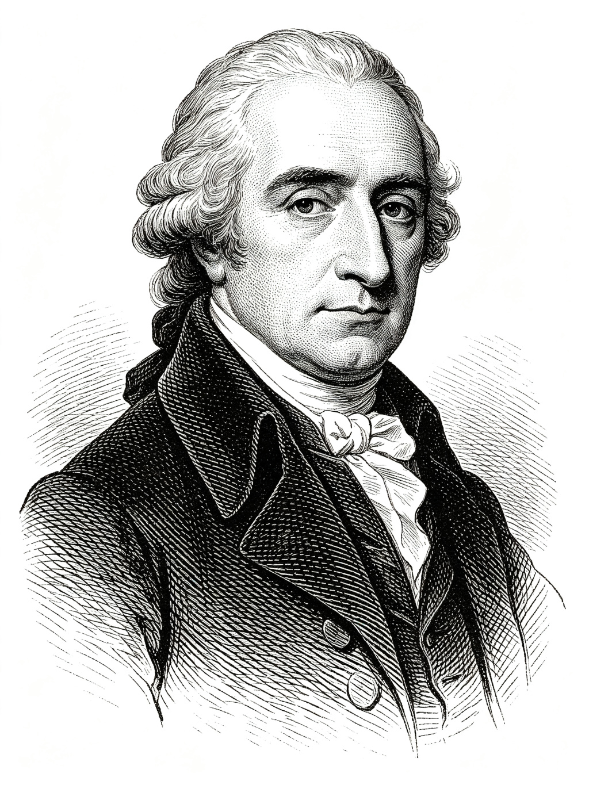
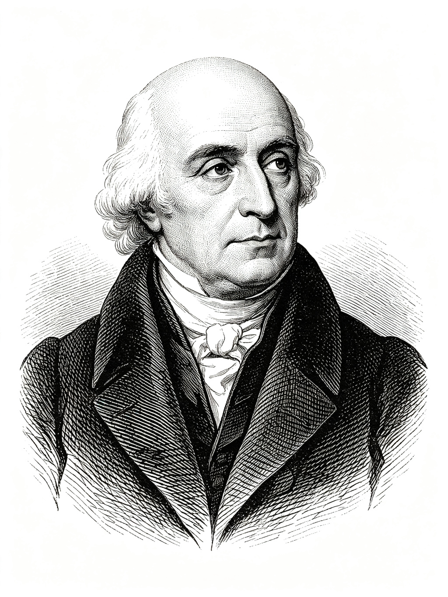
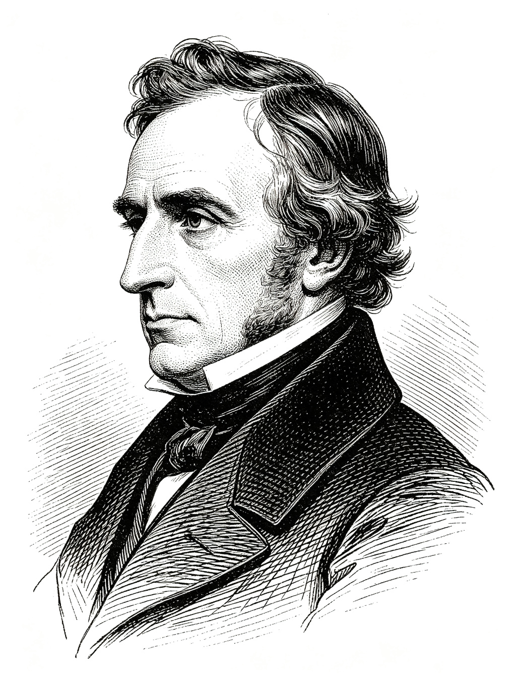
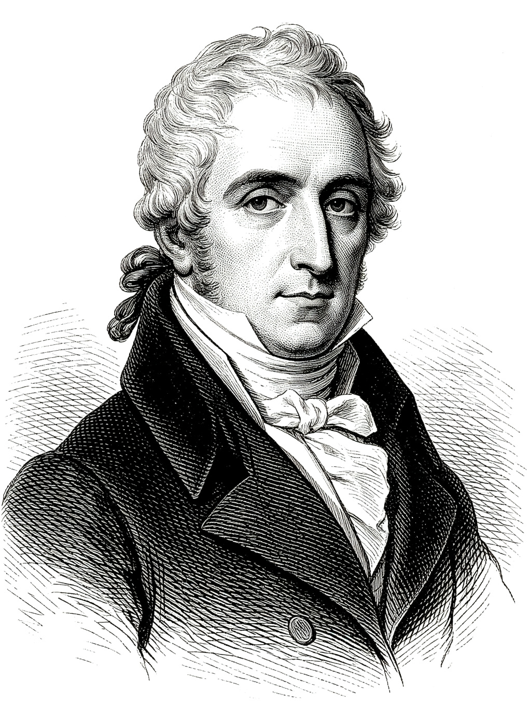
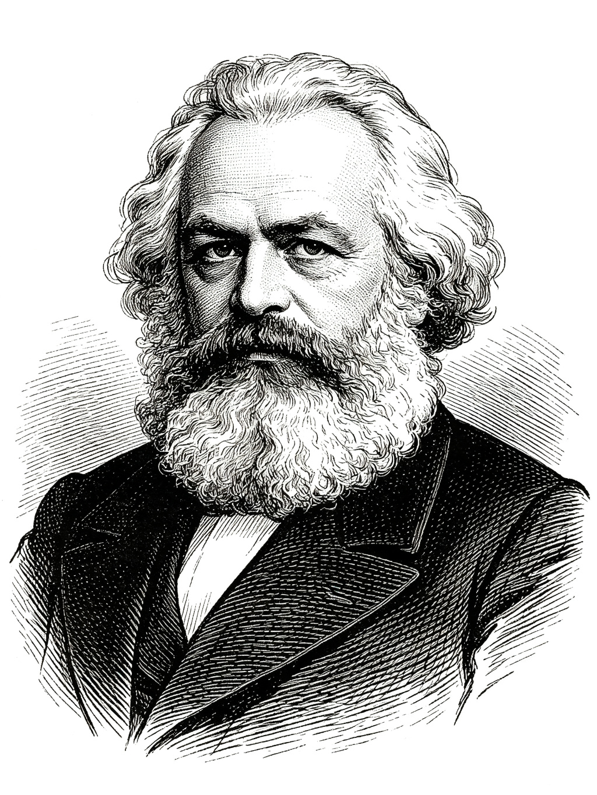
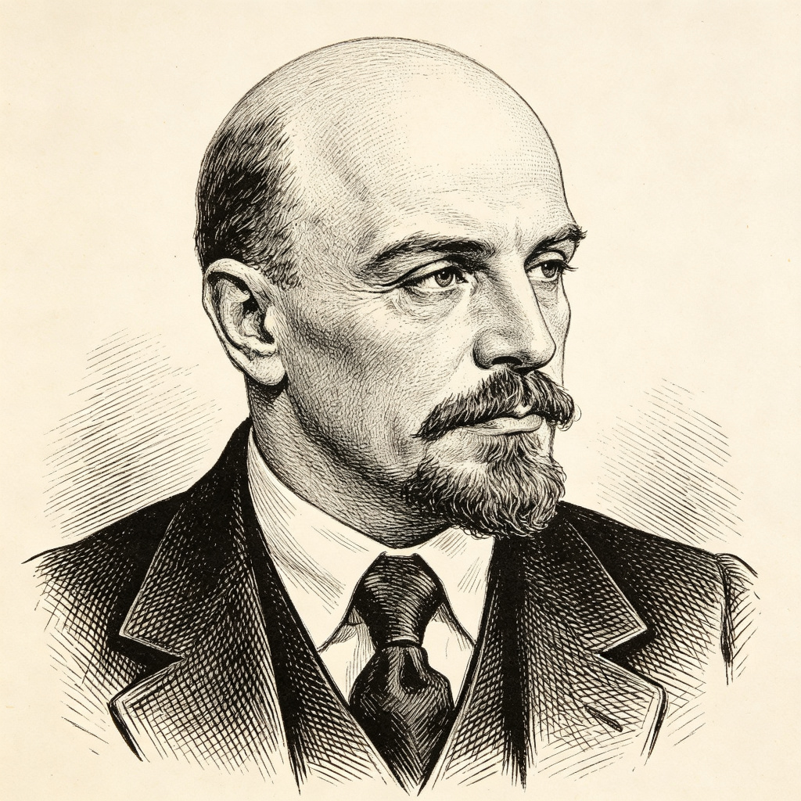
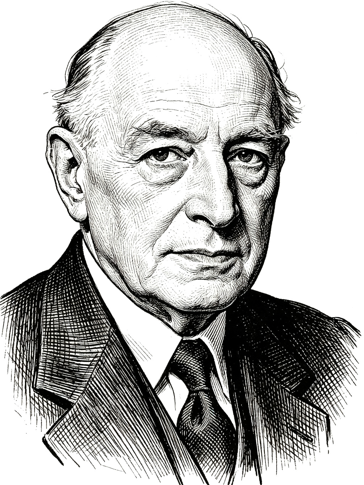
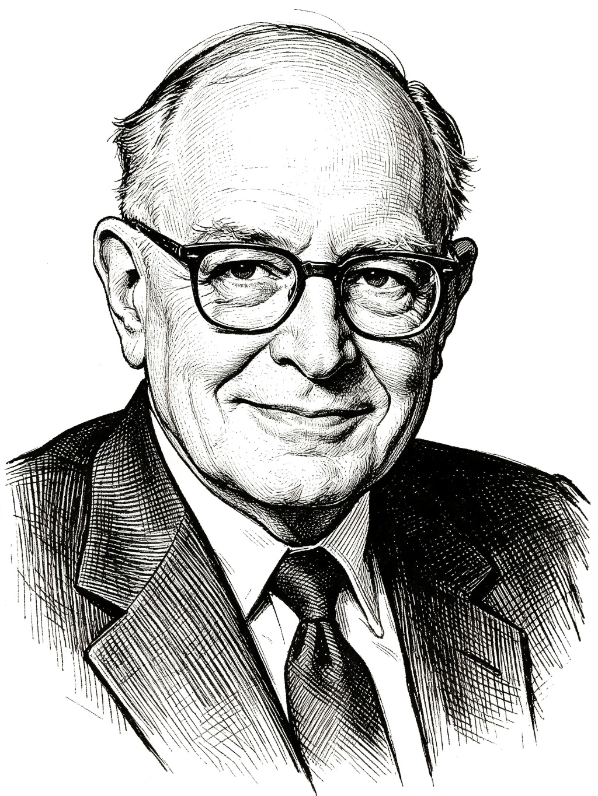

From the Invisible Hand to the Circular Economy —
two and a half centuries of ideas that shaped the modern world
Until the 18th century, the study of society was part of moral philosophy. Scholars since the ancient Greeks had pondered economic questions, but no one had built a systematic theory of how the economy holds together.
That changed in 1776, when a Scottish moral philosopher published a book that created an entirely new field.

“The Father of Economics” — author of The Wealth of Nations (1776)
Smith set out to prove that an economy without government could not merely function — it could thrive. Borrowing from Newton’s vision of natural laws, he believed he had uncovered the natural laws of economic life.
Each person pursues their own gain. If a shoemaker overcharges, rivals undercut them. Competition keeps self-interest in check — driving prices down and producing what people want most.
Millions of individual decisions self-regulate through markets, with no central authority — producing an efficient allocation of resources spontaneously.
From the French “let it do”: the free market, left alone, outperforms any government at organising economic life.
Three roles only: national defence, a system of justice, and public infrastructure (roads, bridges, canals) financed by taxation.
Blue dots are buyers (each with a maximum price they’ll pay). Gold dots are sellers (each with a minimum they’ll accept). They drift about pursuing only their own gain. Watch what happens to the market price — no one sets it.
Self-interested behaviour, channelled through competitive markets, spontaneously produces orderly and beneficial social outcomes — without any central planner directing it.
Smith also warned that monopolies — “the highest price which can be got” — are the enemy of this system. Competition must be preserved for the invisible hand to work.
How economists learned to understand value — and demand


Bentham founded utilitarianism: an action is right if it promotes “the greatest happiness of the greatest number.” Mill extended it, blending happiness with human rights.
The concept of utility — satisfaction from consumption — became the foundation of consumer theory. Then came a sharper insight: what matters is not total utility, but the marginal (additional) utility of one more unit — and it diminishes.
Alfred Marshall (1842–1924) later built the law of demand and the supply-demand framework on this idea — still the core of microeconomics today.
The extra satisfaction from one more unit. Because it diminishes, consumers buy more only if price falls — the basis of the demand curve.
Click “Consume” to eat another ice cream. Each extra unit gives less satisfaction than the last.

“Supply creates its own demand.”
The classical economists believed prolonged unemployment was impossible. The act of producing goods generates the very income needed to buy them. Everything produced will be purchased — there can be no general shortage of demand.
Wars and droughts may cause temporary disturbances, but the market always self-corrects back to full employment. (The terms “micro” and “macro” did not yet exist — macroeconomics was born in the 20th century.)
The economy naturally tends toward full employment without government intervention.

Capital: Critique of Political Economy (Das Kapital, 1867)
Marx argued that the price of a good far exceeds the wages paid to make it. That gap — price minus labour cost — is surplus value: the capitalist’s profit, and the exploitation of labour.
Competition forces capitalists to replace workers with machines — but labour is the source of profit. As machines replace labour, profits fall while unemployment and poverty rise. Crisis is not an accident; it is built into the system.
His prediction of capitalism’s collapse did not materialise — yet his insights remain strikingly relevant:
The business cycle — from the Great Depression to the 2008 financial crisis.
Middle-class stagnation as income gaps widen across developed economies.
Real wages barely growing for decades even as productivity rises.
Job insecurity from automation — as relevant in the age of AI as in the age of steam.

Could an economy run without markets?
Marx had critiqued capitalism. After the 1917 Russian Revolution, the harder question arrived: how do you actually run an economy without markets?
The Soviet Union replaced private exchange with central planning: Gosplan set output targets, prices, and allocation across thousands of enterprises. Rapid industrialisation was achieved — but so were chronic shortages, queuing, and the 1932–33 famine.
The Polish economist Oskar Lange argued a central board could simulate markets, adjusting prices by trial and error until supply met demand.
Ludwig von Mises (1920): without private ownership of capital goods, there are no market prices for the means of production — and without prices, rational economic calculation is impossible.
Hayek added: the knowledge needed to allocate resources — local, tacit, constantly changing — can never be concentrated in a central bureau. Markets aggregate it through prices.
Oskar Lange (1936): a central board need not know everything. It sets prices and adjusts them — raising where shortages appear, lowering where surpluses build — exactly as a market does.
Abba Lerner: state enterprises should be told to set price equal to marginal cost, achieving the same efficiency as perfect competition.
You are the central planner. These three goods are linked — bread and shoes compete for the same shoppers, while cars supply the machinery used to make both. Move one planned price and the other markets shift too. Clear all three markets at once.
By the 1980s, even planned economies were introducing market reforms. The Soviet bloc collapsed in 1989–91. China moved to a “socialist market economy” after 1978. The debate’s central insight — that prices carry irreplaceable information — shaped the rest of the century.
The General Theory of Employment, Interest and Money (1936)
When the Great Depression struck, Say’s Law said it was impossible. Keynes explained why it wasn’t: full employment is only a special case, not the norm. Wages are “sticky” — they don’t fall easily — and falling wages only reduce demand further. The system can stay trapped in unemployment.
The solution: government spending. Using the multiplier, every dollar spent on roads or schools generates a multiplied increase in total demand. The term “macroeconomics” itself was coined only in 1945.
Classical theory had no answer. The world economy remained trapped in depression for a decade — until wartime spending finally validated Keynes’s prescription.
Monetarism, new classical economics — and the return of the market


In the 1970s, stagflation — stagnation plus inflation, triggered by oil crises — was something Keynesian theory could not explain. The door opened for a counter-revolution.
Hayek had argued since the 1940s that central planning destroys the price signals that coordinate society. Friedman showed that changes in the money supply drive output (short run) and prices (long run). Lucas argued that people form “rational expectations” and anticipate policy, rendering it ineffective.
Shared principle: markets return to full employment on their own; government intervention — minimum wages, unions, regulation — is what creates the rigidities that cause unemployment.
If wages and prices were free to adjust, markets would achieve full employment without government — just as Smith and Say had argued nearly two centuries earlier.
What happens when economics meets the real human mind
Classical economics assumes rational, well-informed consumers. Behavioural economics shows the mind works in predictably irrational ways: we rely on mental shortcuts, and our choices change depending on how options are “framed.”
Rather than deducing behaviour from theory, it relies on experiments — and uses the findings to “nudge” people toward better decisions. Three Nobel Prizes in 15 years underscore its importance.
A deadly disease is expected to kill 600 people. Two programs are proposed. Which do you choose?
Rethinking profit, people, and planet
Economics long operated in isolation from the environment. Today, the three pillars of sustainability — profit, people, planet — are understood as deeply interdependent.
The traditional take-make-dispose model treats finite resources as infinite. A circular economy designs goods for repair, reuse, and safe return to the biosphere — eliminating waste by design.
A closed loop: materials circulate indefinitely — nothing is thrown away.
Is the pendulum swinging back toward protectionism?
Ricardo showed that free trade makes both sides richer through comparative advantage. For decades after 1945, the world followed this logic: tariffs fell, container ships multiplied, and China became the “factory of the world.”
But globalisation also produced large imbalances: persistent US deficits, Chinese surpluses, manufacturing job losses across the Rust Belt, and rising inequality within countries. The 2008 financial crisis exposed how surpluses and deficits could destabilise the whole system.
From the 2018 US–China tariff war to Brexit, export controls, and “reshoring,” barriers Smith and Ricardo spent two centuries dismantling are being rebuilt. Is this a temporary correction — or a structural shift?
Set a tariff on imported steel. See who gains, who loses — and the deadweight loss to society.
Each school answered the questions its predecessors could not — and left new questions for those who followed.
| School | Markets Self-Regulate? | Role of Government | Cause of Crises | Prescription |
|---|---|---|---|---|
| Smith / Classical | Yes — invisible hand | Defence, justice, public works | Temporary shocks only | Laissez faire |
| Say’s Law | Yes — supply = demand | Minimal | General gluts impossible | Let markets clear |
| Marx | No — internal contradictions | Instrument of class rule | Exploitation, falling profits | Revolution |
| Planned Economy | Replaced by the plan | Owns & allocates everything | No price signals, shortages | Central planning (Gosplan) |
| Keynes | Not necessarily — sticky wages | Essential — fiscal policy | Insufficient demand | Gov spending, multiplier |
| Monetarist / New Classical | Yes — if prices flexible | Intervention causes problems | Money supply, rigidities | Rules, deregulation |
| Behavioural | Imperfectly — humans irrational | Choice architecture | Cognitive biases | Nudges, evidence-based policy |
| Trade & Imbalances | Yes — but distribution matters | Rules, tariffs, redistribution | Global imbalances, job displacement | Manage globalisation — or reverse it? |
These ideas are not museum pieces — they are living tools for understanding the world you will inherit and shape.
— End of Interactive Chapter —